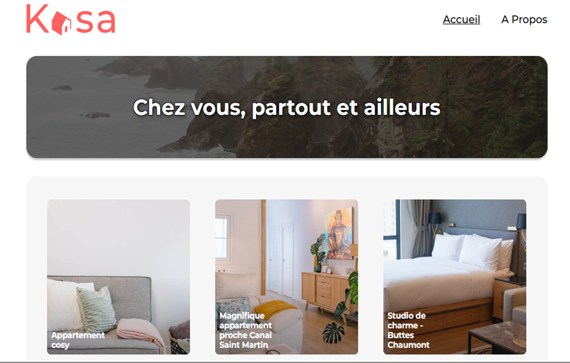

Application React complète — routing, composants, fetching API et tests
Reprendre la maquette fournie et développer une application React complète (Vite). L’objectif principal : construire une application robuste avec React Router, créer des composants réutilisables (Banner, Card, Collapse, Slideshow), récupérer les données d’une API locale, gérer les erreurs de route (page 404) et mettre en place des tests unitaires et end-to-end pour assurer la qualité.
Dans ce projet Kasa, j’ai commencé par initialiser une application React avec Vite et à configurer le routage grâce à React Router, en mettant en place les pages Home, Property et Error 404, ainsi qu’un layout principal comprenant un header, un footer et un système de navigation fluide. J’ai ensuite développé les composants essentiels de l’interface : une bannière statique (Banner), des cartes réutilisables pour afficher les logements (Card), un composant Collapse permettant d’ouvrir ou fermer les sections descriptives, ainsi qu’un Slideshow entièrement fonctionnel, incluant les flèches, les bullet points et la navigation circulaire entre les images. Les données des propriétés ont été récupérées via l’API locale à l’aide de fetch et de useEffect, avec gestion des états de chargement et d’erreur. Une attention particulière a été donnée à la redirection automatique vers la page 404 en cas d’ID invalide et au respect de la maquette, notamment en responsive. Enfin, j’ai réalisé les tests demandés avec Cypress, couvrant la navigation entre les pages, le chargement correct des données et le fonctionnement du carrousel, afin de garantir la stabilité des principales fonctionnalités. L’application finale est pleinement opérationnelle, fidèle au design fourni et validée par des tests end-to-end.
Ce projet m’a permis d’acquérir une expérience concrète de bout en bout sur une application React : initialisation Vite, mise en place du routing, création de composants stateful et stateless, récupérationdes données, gestion des erreurs et tests (unitaires & E2E). J’ai aussi renforcé mes bonnes pratiques en matière de README, maintenance des fixtures et stratégies anti-flaky pour Cypress.
Voir le code source du projet sur GitHub